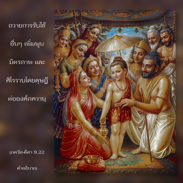

แต่พวกที่บูชาข้าอยู่เสมอด้วยการอุทิศตนเสียสละ ทำสมาธิอยู่ที่รูปลักษณ์ทิพย์ของข้า คนเหล่านี้ข้าจะส่งส่วนที่ขาดให้ และรักษาส่วนที่มีอยู่แล้ว



ผู้ที่ไม่สามารถมีชีวิตอยู่ได้แม้เพียงเสี้ยววินาทีเดียวหากปราศจากซึ่งกฺฤษฺณจิตสำนึกได้ แต่ระลึกถึงองค์กฺฤษฺณวันละยี่สิบสี่ชั่วโมง ปฏิบัติในการอุทิศตนเสียสละรับใช้ด้วยการสดับฟัง สวดภาวนา ระลึกถึง ถวายบทมนต์ บูชา รับใช้พระบาทรูปดอกบัวของพระองค์ ถวายการรับใช้อื่นๆ เพิ่มพูนมิตรภาพ และศิโรราบโดยดุษฎีต่อองค์ภควานฺ กิจรรมทั้งหลายเหล่านี้เป็นสิริมงคล และเต็มไปด้วยพลังทิพย์ซึ่งจะทำให้สาวกสมบูรณ์ในความรู้แจ้งแห่งตน ดังนั้น สิ่งเดียวที่ปรารถนาคือมาอยู่ใกล้ชิดกับองค์ภควานฺ สาวกเช่นนี้จะมาถึงองค์ภควานฺโดยไม่ยากลำบากอย่างไม่ต้องสงสัย เช่นนี้เรียกว่า โยคะ ด้วยพระเมตตาของพระองค์สาวกเช่นนี้ไม่มีวันกลับไปสู่สภาวะชีวิตวัตถุอีก กฺเษม หมายถึง การปกป้องคุ้มครองด้วยพระเมตตาขององค์ภควานฺ พระองค์ทรงช่วยสาวกให้บรรลุถึงองค์กฺฤษฺณด้วยโยคะ และเมื่อมีกฺฤษฺณจิตสำนึกอย่างสมบูรณ์องค์ภควานฺจะทรงปกป้องคุ้มครองเรา ไม่ให้ตกลงไปสู่สภาวะชีวิตที่มีความทุกข์อีกต่อไป